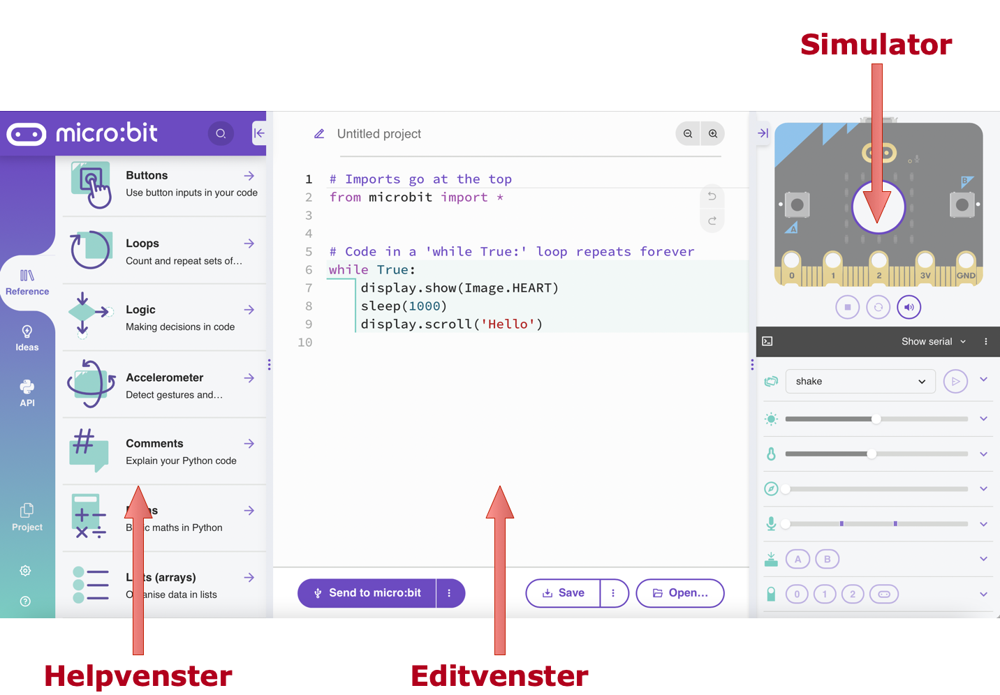

Je eerste Python programma voor de Micro:bit
Contents
Je eerste Python programma voor de Micro:bit#
Je kunt met de Micro:bit al heel snel je eerste programma maken, bijvoorbeeld een knipperend hartje. Daarvoor heb je geen sensoren nodig.
Tip
De online Python editor kun je het beste gebruiken met een browser die WebUSB ondersteunt, zoals de recente versies van Chrome of Edge.
De online Python editor vind je op: https://python.microbit.org/v/3. Je krijgt dan het volgende scherm:
{kind=link}

Fig. 9 Online Python editor voor de microbit#
Stap 1. Voer het programma in.
ga naar de website https://python.microbit.org/v/3
selecteer alle tekst in het edit-venster, en verwijder deze.
kopieer de onderstaande programmatekst (knopje rechtsboven), en plak die in het edit-venster
from microbit import *
while True:
display.show(Image.HEART_SMALL)
sleep(500)
display.show(Image.HEART)
sleep(500)
Stap 2. Voer het programma uit in de simulator
klik op de “run” knop: het driehoekje midden in het simulator-venster. Als het goed is, zie je nu een “kloppend hart” op een gesimuleerde microbit.
je kunt de simulator stoppen met de stop-knop: het vierkantje onder de simulator
Stap 3. Voer het programma uit op de microbit
verbind je microbit met een USB-poort van je computer
klik op de knop “Send to microbit” onderaan en volg de aanwijzingen op het scherm
via WebUSB wordt het programma direct op de microbit geladen en uitgevoerd.
Als je een andere browser gebruikt dan Chrome of Edge, heb je wat meer stappen nodig:
de knop “Send to microbit” stuurt een programma-bestand naar je computer (in de Download-map);
op je computer is de microbit zichtbaar als een extern opslagapparaat (“schijf”, vgl. een USB-stick);
op je computer sleep je het programma-bestand van de Download-map naar de microbit-schijf. Het wordt dan op de microbit geladen en direct uitgevoerd.
Als het programma op de microbit geladen is, dan kun je dit ook zonder computer uitvoeren:
maak je microbit los van de computer
verbind je microbit met een zelfstandige voeding: een batterij, een USB “powerbank”, of een USB-netvoeding.
het programma wordt direct uitgevoerd, zodra de microbit opstart.
Stap 4. Bewaar het programma (“project”) op je computer
geef het project een naam (boven het edit-venster), bijvoorbeeld “kloppend-hart”
klik op “Save” onderaan het editvenster. Het (“hex”)bestand wordt nu naar je computer gestuurd (download map).
je kunt het bestand een volgende keer in de editor laden met de “Open” knop onderaan het edit-venster.
je kunt het bestand ook op de microbit laden: dan wordt het direct uitgevoerd.
De Python programmeeromgeving#
Fig. 10 Online Python editor voor de microbit#
Hieronder vind je een overzicht van de Python-programmeeromgeving van de Micro:bit en een korte uitleg van de belangrijkste onderdelen.
In het edit-venster vind je altijd het huidige programma. Dit kun je laden, bewerken, uitvoeren, en bewaren. Bij het bewerken wordt het programma ook al (een beetje) gecontroleerd: gesignaleerde problemen zie je in de linker kantlijn.
Bovenaan het edit-venster vind je de naam van het programma (project). Geef je programma een duidelijke naam, zodat je dit later ook terug kunt vinden.
Met behulp van de knoppen onderin het edit-venster kun je je programma op de microbit laden, of bewaren als bestand. Met de “Open” knop laad je een bestaand programma in het edit-venster.
Hulp vind je via het help-venster, voor ideeën, voorbeelden, en handleidingen.
Je kunt het programma uitvoeren via het simulator-venster: je kunt het dan uittesten voordat je het uitvoert op de micro:bit.